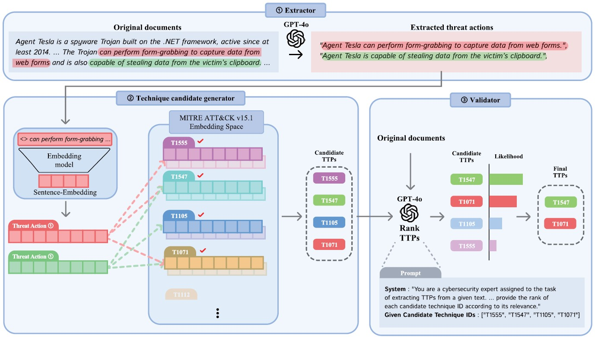
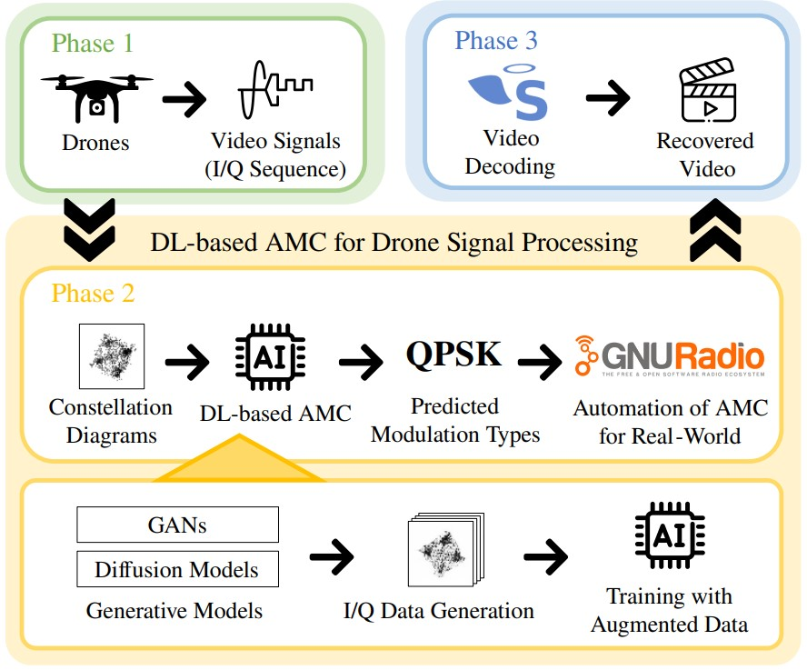

|
Insup Lee
I am an AI & Security Researcher based in Abu Dhabi, UAE, working on generative models for cybersecurity and drones.
Previously, I spent five years as a researcher at the Agency for Defense Development (ADD), conducting research in AI-driven cybersecurity.
CV / Email / LinkedIn / Google Scholar/ ORCiD |

- 2026.02.12: I was awarded the Korea University Graduate School Achievement Award.
- 2025.11.30: LeakDiT has been accepted to IEEE Computer Architecture Letters.
- 2025.10.13: Our paper on LLM-based CTI has been accepted to IEEE Access.
- 2025.08.29: Our paper on DDoS detection has been published in JICS.
- 2025.08.12: Our paper on drones has been accepted to IEEE Signal Processing Letters.
- 2025.06.05: MuCamp has been accepted to IEEE Transactions on Information Forensics and Security (TIFS).
- 2025.03.11: I was awarded commendations from the UAE Ministry of Defense and the UAE Ambassador.
- 2024.12.01: Our paper on web shell detection has been published in JKIISC.
- 2024.04.26: I arrived in Abu Dhabi, UAE, where I will be spending one year.
- 2024.03.01: UniQGAN has been published in IEEE Transactions on Dependable and Secure Computing (TDSC).
{kind=link}
- AI for Cybersecurity: cyber threat intelligence using NLP/LLM, hardware security (side-channel analysis), adversarial ML
- Network and Wireless Security: drones, robust communications, network intrusion detection systems, anomaly detection
- Generative Models: diffusion transformers and GANs for data augmentation, LLM for software vulnerability detection
- Ph.D. Candidate in Cybersecurity, Korea University, Seoul, Republic of Korea, 2019 - Present
- Advisors: Prof. Sangjin Lee and Prof. Seokhie Hong
- B.E. in Cyber Defense, Korea University, Seoul, Republic of Korea, 2014 - 2018
- Lecturer, Korea University, Seoul, Republic of Korea, 2025.9 - Present
- Taught graduate-level course "Computer Networks (SCS 302)"
- Research Intern, Indiana University, Bloomington, Indiana, USA, 2025.3 - 2025.6
- Researched quantification methods for ML security in autonomous vehicle systems
- Security Engineer, Ministry of National Defense, Republic of Korea, 2023.8 - 2025.5
- Led international joint research on AI-based security with the UAE Ministry of Defense
"AI-Based RF Signal Analysis for Drone Security" (resulting in publication [J7]) - Taught cybersecurity courses "Penetration Testing" in English to UAE officers
- Researcher, Agency for Defense Development (ADD), Seoul, Republic of Korea, 2018.7 - 2023.7
-
Conducted AI-based security research and in-house software development (Advisor: Prof. Changhee Choi)
(1) "Detection of Nation-Sponsored Cyber Attacks Using NLP Technologies" (Apr 2021 - Jul 2023)
(2) "Generative Models for Cybersecurity Data Augmentation" (Jun 2019 - Oct 2020)
(3) "IPADS: Integrated Proactive and Adaptive Defense Systems" (Aug 2018 - May 2019) - Published six international papers [C1, C2, J1, J2, J3, J5], four patents, and 12 domestic papers
Under Review
-
Multi-Domain Side-Channel Analysis for Anomaly Detection in Embedded System
S. Park, D. Bae, I. Lee, J. Kim, H. Oh, H. Kim, and S. Hong -
(Blind Review)
J. Baek, G. Ahn, S. Park, D. Bae, G. Kim, I. Lee, H. Kim, and S. Hong -
(Blind Review)
D. Bae, S. Park, I. Lee, Y. Jung, K. Lee, H. Kim, and S. Hong
 |
[J8] LeakDiT: Diffusion Transformers for Trace-Augmented Side-Channel Analysis
I. Lee, D. Bae, S. Hong, and S. Lee IEEE Computer Architecture Letters 2026 [Paper] (SCI 2024 Top 79.2% in Computer Science, Hardware & Architecture) |
|  |
[J7] Multi-Step LLM Pipeline for Enhancing TTP Extraction in Cyber Threat Intelligence
H. Kim, D. Lee, I. Lee, S. Lee, and S. Lee IEEE Access 2025 [Paper] (SCI 2024 Top 34.8% in Engineering, Electrical & Electronic) |
|  |
[J6] Enhancing Modulation Classification via Diffusion Transformers for Drone Video Signal Processing
I. Lee, K. Alteneiji, and M. Alghfeli IEEE Signal Processing Letters 2025 [Paper] (SCI 2024 Top 31.6% in Engineering, Electrical & Electronic) |
 |
[J5] MuCamp: Generating Cyber Campaign Variants via TTP Synonym Replacement for Group Attribution
I. Lee and C. Choi IEEE Transactions on Information Forensics and Security (TIFS) 2025 [Paper] (SCI 2024 I/F Top 7.8% in Computer Science, Theory & Methods) |
 |
[J4] UniQGAN: Towards Improved Modulation Classification With Adversarial Robustness Using Scalable Generator Design
I. Lee and W. Lee IEEE Transactions on Dependable and Secure Computing (TDSC) 2024 [Paper] (SCI 2023 I/F Top 4.9% in Computer Science, Software Engineering) |
 |
[J3] Camp2Vec: Embedding Cyber Campaign With ATT&CK Framework for Attack Group Analysis
I. Lee and C. Choi ICT Express 2023 [Paper] (SCI 2023 Top 23.0% in Computer Science, Information Systems) |
 |
[J2] Exploiting TTP Co-occurence via GloVe-Based Embedding With ATT&CK Framework
C. Shin, I. Lee, and C. Choi IEEE Access 2023 [Paper] (SCI 2023 Top 34.4% in Engineering, Electrical & Electronic) |
 |
[J1] BAN: Predicting APT Attack Based on Bayesian Network With MITRE ATT&CK Framework
Y. Kim, I. Lee, H. Kwon, G. Lee, and J. Yoon IEEE Access 2023 [Paper] (SCI 2023 Top 34.4% in Engineering, Electrical & Electronic) |
 |
[C2] Anomaly Dataset Augmentation Using Sequence Generative Models
S. Shin, I. Lee, and C. Choi IEEE International Conference on Machine Learning and Applications (ICMLA) 2019 [Paper] |
|
[C1] Opcode Sequence Amplifier Using Sequence Generative Adversarial Networks
C. Choi, S. Shin, and I. Lee International Conference on ICT Convergence (ICTC) 2019 [Paper] |
-
Method for Augmentating Cyber Attack Campaign Data to Identify Attack Group, and Security System Performing Same
C. Choi and I. Lee
Korea Patent Application Number. 10-2024-0176082, December 2, 2024. -
Information Identification Method and Electronic Apparatus Thereof
C. Choi, I. Lee, C. Shin, and S. Lee
Korea Patent Application Number. 10-2024-0006106, January 15, 2024. -
Method for Training Attack Prediction Model and Device Therefor
C. Choi, C. Shin, S. Shin, S. Seo, and I. Lee
U.S. Patent Number. US20230308462A1, September 28, 2023. -
Appratus, Method, Computer-readable Storage Medium and Computer Program for Generating Operation Code
C. Choi, S. Shin, and I. Lee
Korea Patent Number. 10-2246797, April 30, 2021.
- S. Park, D. Bae, I. Lee, H. Kim, and S. Hong, “EM-Based Anomaly Detection using a Dual-Domain Approach,” in Proc. of the KIISC Winter Conference (CISC-W), Nov. 2025. (Selected as an Outstanding Paper Award)
- J. Kim, I. Lee, C. Jeon, S. Kim, S. Hong, and S. Lee, “Reinforcement Learning for Parameter Optimization in CADO-NFS Polynomial Selection,” in Proc. of the KIISC Winter Conference (CISC-W), Nov. 2025.
- S. Park, D. Bae, I. Lee, H. Kim, and S. Hong, “A Statistical Time-Domain Approach to Anomaly Detection for Robotic-Arm MCU,” in Proc. of the KIMST Fall Conference, Nov. 2025.
- H. Park and I. Lee, “Enhanced DDoS Detection via Traffic Volume-Based Labeling and Transfer Learning,” Journal of Internet Computing and Services (JICS), vol. 26, no. 4, pp. 1-8, Aug. 2025.
- K. Kim and I. Lee, “User Behavior Embedding via TF-IDF-BVC for Web Shell Detection,” Journal of The Korea Institute of Information Security & Cryptology (JKIISC), vol. 34, no. 6, pp. 1231-1238, Dec. 2024.
- I. Lee, C. Shin, and C. Choi, “Mutating Cyber Camapaign With TTP Word Replacement,” in Proc. of the KIMST Annual Conference, Jun. 2023.
- C. Shin, I. Lee, and C. Choi, “Towards GloVe-Based TTP Embedding With ATT&CK Framework,” in Proc. of the KIMST Annual Conference, Jun. 2023.
- C. Choi, I. Lee, C. Shin, and S. Lee, “Cyber Threat Campaign Analysis Based on PEGASUS and RoBERTa Model,” in Proc. of the KIMST Annual Conference, Jun. 2023.
- I. Lee, C. Shin, S. Shin, S. Seo, and C. Choi, “Analyzing Cyberattack Campaign Similarity via TTP Sequence Embedding,” in Proc. of the KIMST Annual Conference, Jun. 2022.
- S. Shin, I. Lee, C. Shin, S. Seo, and C. Choi, “Cyber Campaign Analysis With TTP Embedding Using TF-IDF,” in Proc. of the KIMST Annual Conference, Jun. 2022.
- C. Shin, S. Shin, I. Lee, S. Seo, and C. Choi, “Classifying TTP Based on CIA Labeling,” in Proc. of the KIMST Annual Conference, Jun. 2022.
- C. Choi, C. Shin, S. Shin, S. Seo, and I. Lee, “Cyber Attack Group Classification Using Siamese LSTM,” in Proc. of the KIMST Annual Conference, Jun. 2022.
- C. Shin, S. Shin, S. Seo, I. Lee, and C. Choi, “Embedding and Training RNN to Estimating the Goal of Cyber Attack,” in Proc. of the KIMST Fall Conference, Nov. 2021.
- S. Shin, C. Shin, S. Seo, I. Lee, and C. Choi, “The Proposed Approach for Country Prediction With TTP-based Cyber Data Using GCN,” in Proc. of the KIMST Fall Conference, Nov. 2021.
- C. Choi, C. Shin, S. Shin, S. Seo, and I. Lee, “Deep Learning for Estimating Next Action of Cyber Attack,” in Proc. of the KIMST Fall Conference, Nov. 2021.
- Y. Park, S. Shin, and I. Lee, “A Study on Evaluation Method of NIDS Datasets in Closed Military Network,” Journal of Internet Computing and Services (JICS), vol. 21, no. 2, pp. 121-130, Apr. 2020.
- I. Lee, J. Kim, and J. Park, “Analysis of Weight Setting in Incremental Learning to Improve Real-Time Intrusion Detection,” in Proc. of the KIMST Annual Conference, Jun. 2019.
-
KU Graduate School Achievement Award, February 2026
Korea University, Seoul, Republic of Korea -
Outstanding Paper Award, CISC-W'25, KIISC, November 2025
(Paper TItle: EM-Based Anomaly Detection using a Dual-Domain Approach) -
Certificate of Commendation (UAE-ROK Engagement Program), March 2025
United Arab Emirates Ministry of Defense -
UAE Ambassador’s Commendation, March 2025
Embassy of the Republic of Korea to the United Arab Emirates -
The 3rd Prize, Military Cybersecurity Experts Hackathon (Cyber Talpiot), December 2023
Ministry of Science and ICT, Republic of Korea -
Full Tuition Scholarship (Korea University), 2014 - 2018
Ministry of National Defense, Republic of Korea
- AI Cyber Challenge (AIxCC), DARPA and ARPA-H, USA, 2024.4 - 2024.8
- Participated in the semifinal round as a member of Team KORIA, submitting our cyber reasoning system that leverages LLMs for automated detection and patching of software vulnerabilities
- SW Outsourcing Development, KCMVP-Certified Cryptographic Module, 2017.6 - 2018.3
- Implemented a cryptographic module with 25,000 LoC in C - ARIA block cipher (modes: ECB, CBC, CTR), hash functions (SHA-256, SHA-512), and HMAC-based DRBG for Windows (.dll) and Linux (.so)
- AI & Deep Learning: Generative models (diffusion transformers, GANs), LLM pipelines, Adversarial robustness
- Cybersecurity: Side-channel analysis, CTI (TTP extraction, attribution), Cryptographic engineering (25k+ LoC)
- Languages & Tools: Python, C/C++, CUDA, PyTorch, Linux, Git, Docker, Streamlit
- Reviewer, IEEE Transaction on Dependable and Secure Computing (TDSC), 2025
- Reviewer, IEEE Transactions on Information Forensics and Security (TIFS), 2026
- Reviewer, IEEE Transaction on Communications (TCOM), 2025, 2026
- Reviewer, IEEE Journal on Selected Areas in Communications (JSAC), 2025, 2026
- Lecturer, Fall 2025: Computer Networks (SCS302), Korea University
Last Update: February 2026